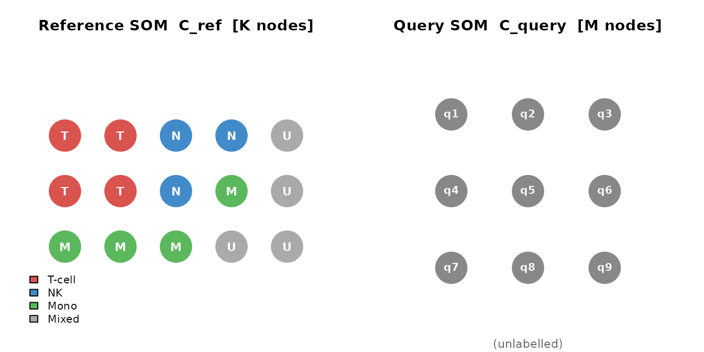
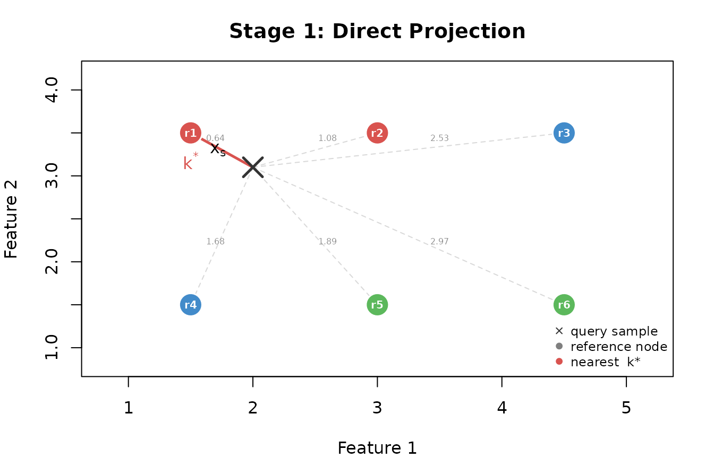
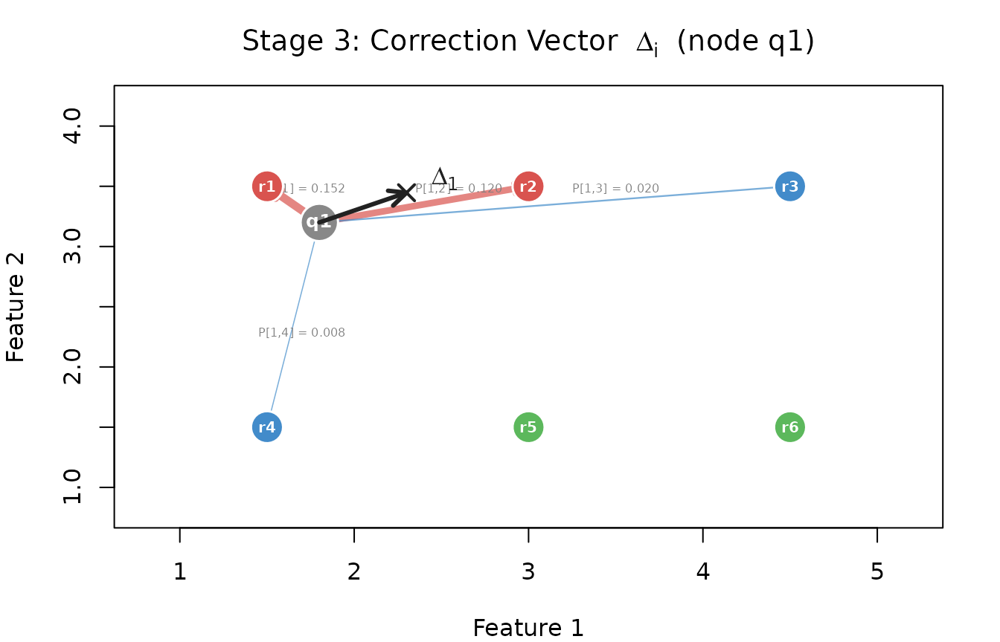
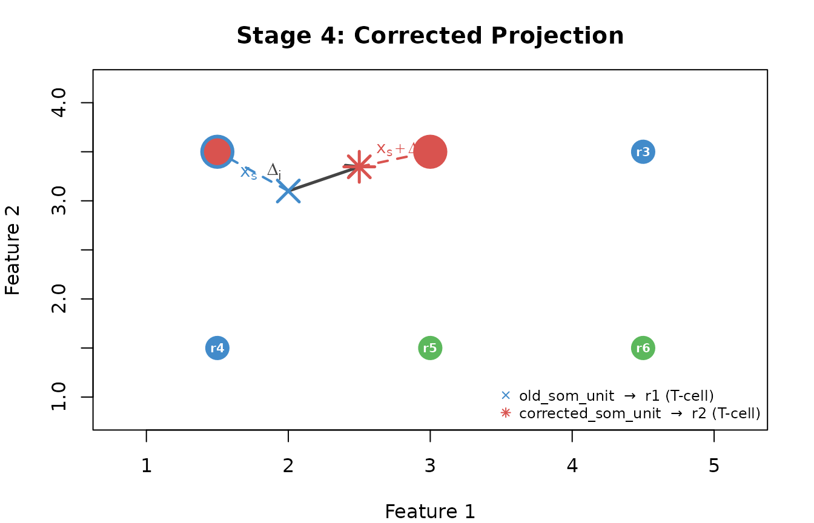
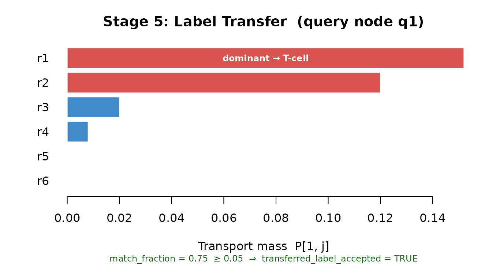

somalign aligns a query SOM to a fixed reference SOM
using codebook-level KL-unbalanced entropic optimal transport. This
vignette traces each stage from raw data to the final per-sample output
columns.
Pipeline overview
{r overview, echo = FALSE, fig.height = 6, eval = requireNamespace("DiagrammeR", quietly = TRUE)} DiagrammeR::mermaid(" graph TD OD[Old data] --> NS[z-score normalise] ND[New data] --> RT[transform: ref mu sigma] NS --> RS[Reference SOM<br/>C_ref K x p] RT --> QS[Query SOM<br/>C_query M x p] RS --> S1[Stage 1: Direct Projection] QS --> S1 RS --> S2[Stage 2: OT on Codebooks] QS --> S2 S2 --> TP[Transport plan P<br/>M x K] TP --> S3[Stage 3: Correction Vectors] RS --> S3 S3 --> S4[Stage 4: Corrected Projection] TP --> S5[Stage 5: Label Transfer] S1 --> PR[old_som_unit<br/>old_som_label<br/>final_status] S4 --> AX[corrected_som_unit<br/>correction_norm<br/>transferred_label] S5 --> AX style PR fill:#d4edda,stroke:#28a745,color:#155724 style AX fill:#cce5ff,stroke:#004085,color:#004085 style S1 fill:#fff3cd,stroke:#856404 style S2 fill:#fff3cd,stroke:#856404 style S3 fill:#fff3cd,stroke:#856404 style S4 fill:#fff3cd,stroke:#856404 style S5 fill:#fff3cd,stroke:#856404 ")
Stage 0 — Training both SOMs
The reference SOM is trained on labelled old data after z-score normalisation (centre and scale computed from old data). The query SOM is trained on new data transformed with the reference and — not new-data z-scores — so both codebooks live in the same feature coordinate system.

Stage 1 — Direct projection (primary result)
Every new sample is assigned to the nearest reference node:
No optimal transport is involved. This is the primary, conservative result.

Output: old_som_unit = k*,
old_som_distance, outside_reference_distance,
final_status, old_som_label,
old_som_label_confidence.
Stage 2 — OT on codebooks
OT is solved once on the codebooks ( query nodes × reference nodes), not on individual samples.
2b — OT objective
The transport plan minimises:
where and are the query and reference node masses. The KL marginal penalties allow each side to discard unmatched mass: a novel query node can route only a small fraction of its mass to any reference node. Solved by alternating Sinkhorn scaling (pure-R or Python POT backend).
Stage 3 — Correction vectors
For each query node the OT plan defines a weighted mean displacement toward its matched reference nodes:

means the query node already aligns with its reference counterpart. A large indicates a systematic displacement (batch effect or population shift).
Stage 4 — Corrected projection (auxiliary)
Every sample in query node is shifted by the same and re-projected:

Both assignments are reported. old_som_unit (blue) is
the primary result; corrected_som_unit (red) is auxiliary —
use it for visualisation and triage.
Stage 5 — Label transfer (auxiliary)
For each query node the dominant reference node is identified from row , and its label is transferred if the acceptance thresholds are met.

Label transfer is rejected when match_fraction < 0.05
(novel node) or when the dominant reference node’s label purity
(transferred_label_confidence) is below 0.60 (mixed
node).
Output columns
| Column | Stage | Purpose |
|---|---|---|
old_som_unit |
1 | Primary node assignment |
old_som_distance |
1 | Distance to that node |
outside_reference_distance |
1 | Novelty flag |
final_status |
1 | inside / outside / unknown |
old_som_label |
1 | Primary label |
old_som_label_confidence |
1 | Label purity at node |
corrected_som_unit |
4 | OT-corrected assignment |
correction_norm |
3/4 | Shift magnitude |
transferred_label |
5 | OT-derived label |
transferred_label_confidence |
5 | Purity at dominant ref node |
transferred_label_accepted |
5 | Gate result (TRUE / FALSE) |
OT runs on the
codebook, not on individual samples. Per-sample cost is
nearest-node search, chunked in somalign_fit().